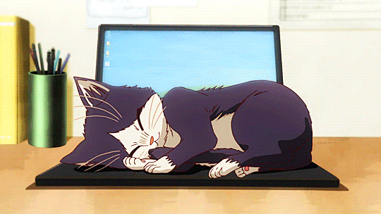
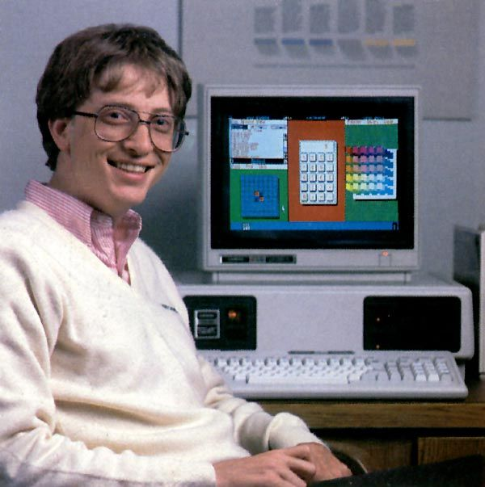
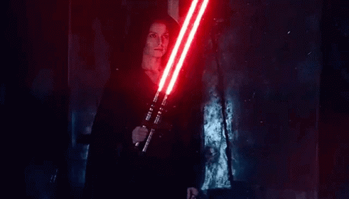

.gif)
Vários estudos foram realizados que tentaram analisar as características dos membros das diferentes subculturas e sua personalidade distinta. No que diz respeito à cultura geek, alguns dos resultados refletidos por esses estudos (destacando os de McCain, Gentile e Campbell) são os seguintes:
1. Interesse em tecnologias
O interesse pelas tecnologias e seu funcionamento é, como mencionado acima , o ponto comum dos diferentes tipos de assuntos referidos como geeks .
2. Neofilia
Muitos dos chamados nerds (e com estilo próprio) apresentam o que é conhecido como neofilia , ou seja, uma forte atração e afinidade com (principalmente tecnológica). Isso implica um certo nível de rejeição da rotina e uma certa capacidade de adaptação às mudanças.
3. Desencantamento político
Vários estudos com numerosos voluntários refletem que um grande número de indivíduos catalogados nessa cultura urbana não gosta do político . Ou seja, eles tendem a não se sentir confortáveis, ignorados e não representados por órgãos políticos. Isso também os leva a uma maior participação em associações cívicas apolíticas.
4. Criatividade e abertura à experiência
Alguns estudos realizados sobre o nível de criatividade dos membros dessa subcultura parecem indicar que os geeks tendem a realizar um número maior de projetos criativos , tanto no nível do trabalho quanto no lazer, do que a média. Um exemplo disso é o grupo de hackers, que manifestam uma alta capacidade de encontrar e criar novos métodos e mecanismos no mundo da computação.
5. Abertura à experiência e extroversão
Embora a imagem estereotipada dos geeks pareça refletir introvertidos e com pouco contato social, os estudos realizados indicam o contrário, correlacionando os dados obtidos no estudo com níveis médios e moderados de extroversão .
Relacionado: A teoria da personalidade de Gordon Allport
Talvez o tópico se deva à pouca consideração social desse grupo quando o conceito de nerd foi criado , algo que poderia levar à sua rejeição social e, consequentemente, porque as pessoas rotuladas com esse termo adotaram uma atitude em relação a defensivo de suas experiências passadas. Dessa forma, a atual consideração positiva desse grupo facilita que seus laços sociais sejam maiores e de melhor qualidade.
6. Tendência relativa à depressão e / ou grandiosidade
Os indivíduos estudados também apresentaram propensão a estados e transtornos depressivos, manifestando baixos níveis de autoestima . No entanto, uma porcentagem moderada de indivíduos atraídos pela cultura geek apresentou altos escores nas características que sugeriam a existência de um certo nível de narcisismo.
Considerações finais: os riscos da rotulagem
Embora muitas pessoas valorizem positivamente a classificação dentro desta e de outras subculturas, os riscos e o uso excessivo de rótulos devem ser levados em consideração ; categorizar as pessoas de acordo com seus gostos ou características pode induzir vários problemas. Ser incluído em um grupo específico significa que tenderá a assumir a presença de certas características pessoais que podem ou não ser possuídas, além de representar um problema para vincular pessoas de fora do próprio grupo.
Além disso, embora a atual percepção social do que é entendido pelos geeks seja aceitável, ainda é verdade que até os anos 90 o termo era usado pejorativamente, assumindo a existência de certos preconceitos (alguns dos quais ainda hoje permanecem latentes) que, em certas situações, podem prejudicar os indivíduos considerados como tais.
Ser marcado dentro de um grupo pode contribuir para o processo de formação de uma identidade e envolve o risco de que o rótulo não se encaixe em nossas características e pode levar à autocensura para se ajustar ao endogrupo e ao estabelecimento de relações competitivas com outras categorias sociais.
Relacionado: 12 características e hábitos de pessoas negativas Tanto ao se identificar com um grupo quanto ao tentar catalogar outras pessoas, evite julgamentos estereotipados e / ou preconceituosos que possam ter sérias conseqüências no assunto rotulado e / ou no grupo social do grupo.
Uma pausa para descontrair >>>>
Por que falar de psicologia especificamente para os “nerds”?
André Junqueira: Primeiro porque eu me identifico muito com esse público, e porque existe uma demanda escancarada desprezada clamando por saúde mental e emocional. Há quase 40 anos eu sou um nerd bem tradicional em algumas coisas. Desde criança, jogo videogames, RPG, card e boardgames, curto revistas e livros de fantasia e super-heróis, adoro tecnologia, ficção científica e terror. E acima de tudo, amo aprender. Acredito que esse talvez seja um dos meus super-poderes! De modo geral, creio que os nerds ainda não sabem se comunicar, se sentem sozinhos, muitos são imaturos e se relacionam de forma consumista com seus hobbies, sofrendo muitas vezes em silêncio.
Existe um mito de que o nerd não pode adoecer ou sofrer emocionalmente, por ser muito “inteligente”. O que avacalha a situação é o estereótipo do nerd como pessoa inteligente, racional, genial, excêntrica, inabalável, pois atrapalha seu crescimento, evita com que procure se desenvolver e sufoca o desejo de se tornar um ser humano melhor.
Além disso, ainda há um preconceito em relação à cultura nerd, mesmo que bem menos do que no passado. Esse preconceito sempre aparece nas notícias, quando ocorre algum crime o primeiro culpado ainda é sempre algum hobby nerd, como o videogame ou rpg. Ninguém relaciona um crime a uma outra atividade, como futebol, por exemplo, mas com os games ainda é uma realidade.
Os games podem tratar de sintomas mentais como depressão e ansiedade?
André Junqueira: Com certeza! Dependendo da forma como forem utilizados, os jogos podem ser tão clinicamente eficientes quanto remédios. Os jogos podem melhorar os níveis cognitivos e de atenção, raciocínio lógico, autoestima, pensamento crítico, melhoria da comunicação e abaixar os níveis de ansiedade e depressão em alguns casos.
Recentemente a a FDA (órgão americano equivalente à Anvisa) autorizou que médicos receitem o game EndeavorRX para crianças como parte do tratamento para transtorno do déficit de atenção com hiperatividade (TDAH).
Quais jogos, dentre os “mainstreams”, você crê que aborda o tema de saúde mental da forma certa?
André Junqueira: Os meus favoritos para puxar uma conversa sobre saúde emocional são o jogo Life is Strange, da Square Enix, e o Hellblade: Senua’s Sacrifice, do estúdio Ninja Theory. Também posso citar o The Last of Us, Red Dead Redemption 2, Limbo, Persona 5, Celeste, e o meu queridos Journey e Shadow of the Colossus (deu pra perceber que eu sou meio Sonysta né, risos).
O Life is Strange em especial aborda muitos temas importantes presentes em nosso cotidiano, como amadurecimento, família, adoecimento, depressão, suicídio, bullying, machismo, eutanásia, dependência química, dentre outros diversos temas. Tudo com o jogador no papel de uma personagem que é fácil de se identificar. Situações cotidianas e ao mesmo tempo angustiantes.
Há uma situação de suicídio ao longo do game que pouca gente sabe que é evitável, assim como na vida real, todos são evitáveis.
Você acredita que todo suicídio pode ser mesmo evitável? Mesmo em pessoas que tem transtornos mentais muito severos?
André Junqueira: Sim todo suicídio pode ser evitável. Esse é o tema da campanha de conscientização da importância da saúde mental e prevenção dos suicídios Setembro Amarelo. A depressão é um fator de risco para o suicídio, mas ainda assim pode ser evitado.
De acordo com os dados do CVV (Centro de Valorização da Vida, serviço voluntário que realiza apoio emocional e prevenção do suicídio), 80% das pessoas dão avisos de ideação suicida, antes de tentarem se matar. Não é para chamar atenção, mas um pedido por ajuda. Infelizmente, pela falta de educação emocional (e isso é responsabilidade dos profissionais de saúde) nós não temos acesso a esse autoconhecimento, então o pior pode acontecer, e infelizmente acontece muito.
Você falou que os nerds, em muitos casos, não tem maturidade emocional e tem uma relação problemática com consumismo , pode desenvolver porque muitos nerds são assim?
André Junqueira: Isso vale para todo mundo. Os nerds em específico, pois o mercado se adaptou de uma forma a explorar esse segmento, leia-se “cadeira gamer” e outros produtos diferenciados apenas a caráter de exploração. Então, pela falta de educação emocional (novamente) os nerds são alvo fácil desse apelo ao consumismo e acumulação compulsiva.
Particularmente, tenho minha coleção completa de Zombicide e dezenas de LEGOs. Morro de vontade de comprar um PS5, apesar de não ter necessidade alguma. Mas acredito que eu tenha consciência sobre essa questão de consumismo, então não sofro por isso. Mas infelizmente muita gente sofre um tipo de ansiedade quando não consegue acompanhar as tendências e novidades do mercado nerd, a chamada FOMO, fear of missing out, ou medo de ficar por fora. A minha responsabilidade profissional como psicólogo é justamente identificar e alertar as pessoas sobre esse risco, e oferecer educação emocional para que não aconteça. 
Preconceito nerd Sempre que um personagem é anunciado como pertencente a uma minoria social ou quando uma pauta social é inserida nos produtos nerds, muitas críticas surgem na internet.
Para eles, “lacração” e “mimimi” é qualquer tentativa de incluir diversidade e novas representatividades nas histórias dos filmes, séries, quadrinhos, desenhos ou jogos. Dizem que isso é querer “empurrar ideologias”, “destruir suas infâncias” ou “forçar o politicamente correto”.
São muitos os exemplos de preconceito por parte da comunidade nerd à diversidade. Por exemplo, quando anunciaram um novo projeto de As Meninas Super Poderosas com uma nova heroína negra, foram muitas as postagens racistas nas redes sociais alertando sobre a temida “lacração”.
Um movimento parecido aconteceu quando saiu o remake de She-Ra na Netflix e alguns nerds machistas ficaram revoltados que ela não estava mais sexualizada. Ou quando a homofobia os fez pedir outra versão do jogo “The Last of Us: Part II” porque a protagonista era lésbica.
Isso acontece, em partes, porque aqueles que sempre se viram representados em tudo, se sentem ameaçados quando outras histórias e pessoas são representadas. É como se perdessem o status de protagonistas e tivessem sua importância diminuída, seu orgulho nerd ferido. Mas, na verdade, o intuito é justamente o oposto: é mostrar que todos podem ser protagonistas e se fazerem presentes em todas as esferas sociais. 
Preconceito nerd Sempre que um personagem é anunciado como pertencente a uma minoria social ou quando uma pauta social é inserida nos produtos nerds, muitas críticas surgem na internet.
Para eles, “lacração” e “mimimi” é qualquer tentativa de incluir diversidade e novas representatividades nas histórias dos filmes, séries, quadrinhos, desenhos ou jogos. Dizem que isso é querer “empurrar ideologias”, “destruir suas infâncias” ou “forçar o politicamente correto”.
São muitos os exemplos de preconceito por parte da comunidade nerd à diversidade. Por exemplo, quando anunciaram um novo projeto de As Meninas Super Poderosas com uma nova heroína negra, foram muitas as postagens racistas nas redes sociais alertando sobre a temida “lacração”.
Um movimento parecido aconteceu quando saiu o remake de She-Ra na Netflix e alguns nerds machistas ficaram revoltados que ela não estava mais sexualizada. Ou quando a homofobia os fez pedir outra versão do jogo “The Last of Us: Part II” porque a protagonista era lésbica.
Isso acontece, em partes, porque aqueles que sempre se viram representados em tudo, se sentem ameaçados quando outras histórias e pessoas são representadas. É como se perdessem o status de protagonistas e tivessem sua importância diminuída, seu orgulho nerd ferido. Mas, na verdade, o intuito é justamente o oposto: é mostrar que todos podem ser protagonistas e se fazerem presentes em todas as esferas sociais.
